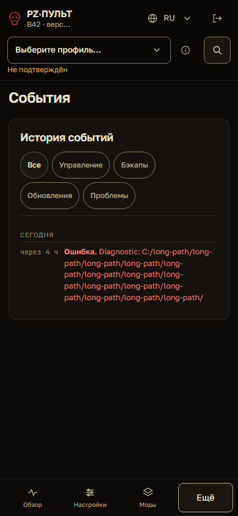
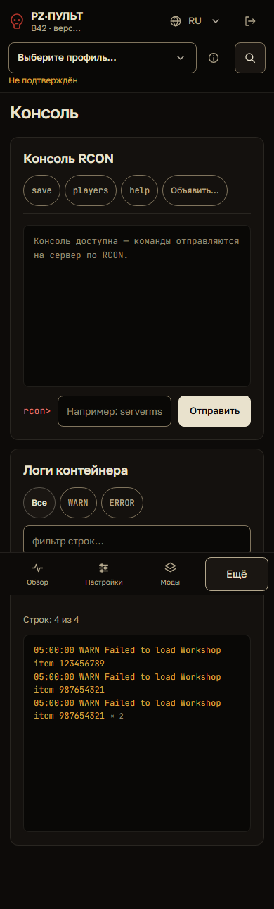
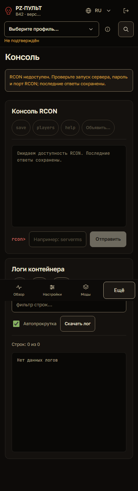
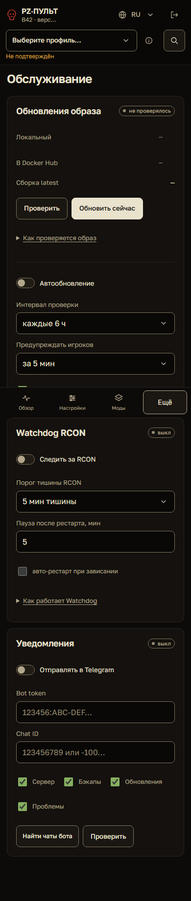
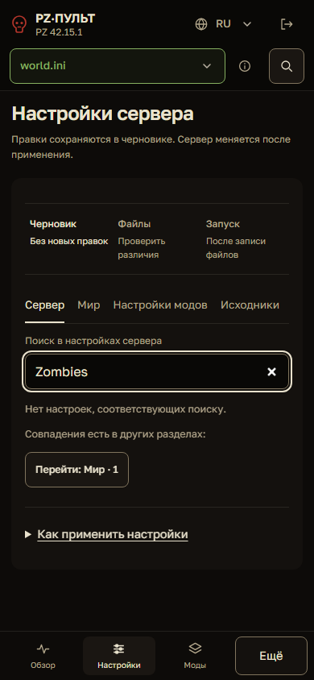
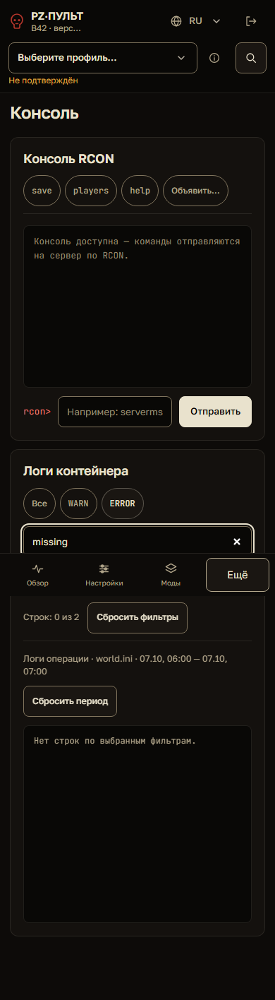
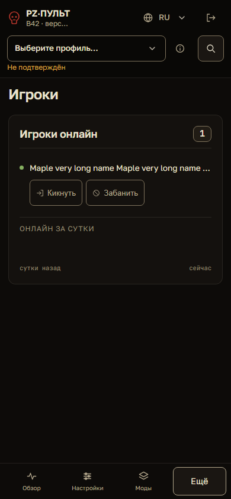
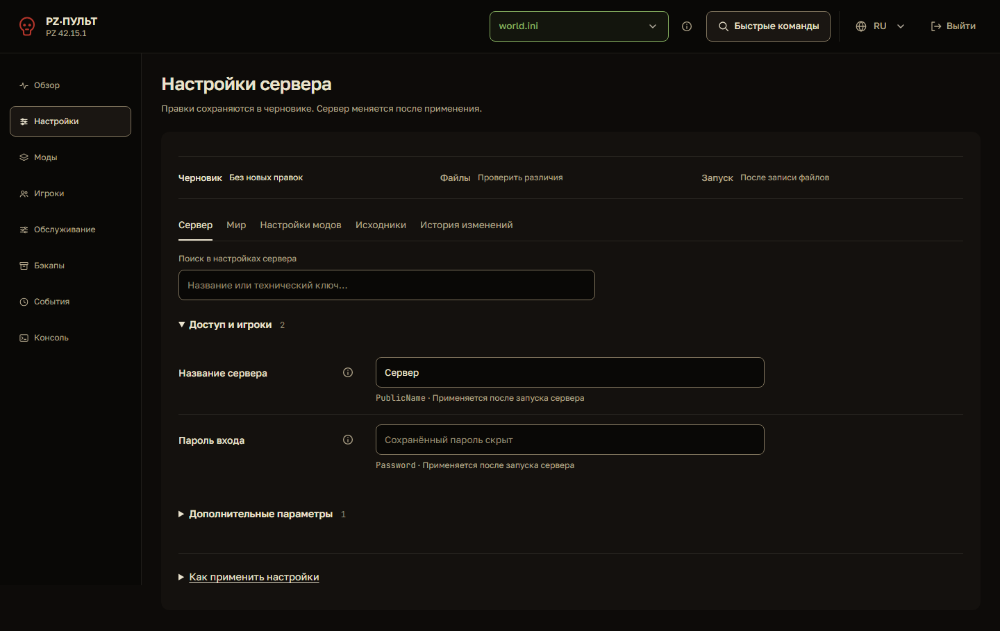
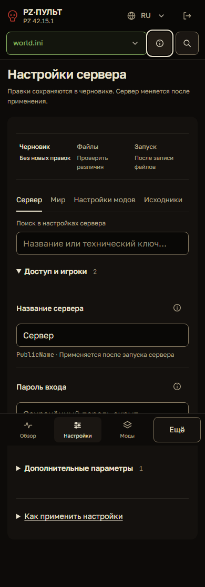

Все 10 пунктов UI/UX-аудита исправлены
07.10.2026 · Исходный аудит · Проверки и SHA-256 изменённых файлов
После исправлений и повторов подтверждено 942 сценария из общего набора; 3 пропущены. Матрица 88 состояний RU/EN на 320/390/768/1440px: 0 переполнений, 0 зарегистрированных axe-нарушений. Визуальная проверка выполнена по свежим снимкам; профиль дополнительно проверен в живом IAB на 390px. Отдельная проверка loading → other → unconfirmed также прошла.
Первоначальный scripts/check.py завершился с 938 успешными тестами, 4 падениями и 3 пропусками. Два падения — net::ERR_NO_BUFFER_SPACE при открытии страницы, до проверки интерфейса. Два выявили смещение панелей консоли после добавления счётчика логов. Счётчик перенесён в область инструментов; все четыре упавших сценария прошли повторно вместе с соседними проверками: 9 успешных тестов. Проверки не ослаблялись. Дополнительная матрица консоли: 12 состояний RU/EN на 320/390/768/1181/1440/2048px, одинаковая высота начала панелей на desktop, без переполнений и зарегистрированных axe-нарушений. Повтор соединения · Повтор затронутых сценариев · Геометрия консоли.
UX-01 · Длинные диагностические строки
Hash/URL/path и ошибки списка переносятся, полный текст сохранён. Проверены 320/390/1440px и оба места отображения события.
Регрессия: test_diagnostics_reflow_preserves_hash_url_path_and_list_errors
Снимок после исправления

UX-02 · Разные записи логов
Объединяются только идентичные исходные строки. Разные Workshop ID и различия времени сохранены.
Регрессия: test_log_coalescing_keeps_identifiers_and_timestamp_precision
Снимок после исправления

UX-03 · Состояние консоли
Сообщение синхронизируется с доступностью ввода, остановкой, remote-отказом и отправкой запроса.
Регрессия: test_console_status_tracks_disabled_available_and_busy_states
Снимок после исправления

UX-04 · Выключенный Watchdog
Подпись называет действие: Следить за RCON / Monitor RCON. Проверены on/off и RU/EN.
Регрессия: test_watchdog_control_names_action_when_off_and_on
Снимок после исправления

UX-05 · Область поиска настроек
Поиск явно называет раздел. При совпадении в соседнем разделе есть переход с сохранением запроса.
Регрессия: test_setting_search_explains_scope_and_opens_matching_section
Снимок после исправления

UX-06 · Пустой результат логов
Есть объяснение, счётчик исходных строк и полный сброс текста, уровня и периода операции. Пустой источник обозначается отдельно.
Регрессия: test_log_empty_states_reset_text_level_and_operation_period
Снимок после исправления

UX-07 · Действия над игроком
Кик и бан имеют видимые подписи. На узком экране действия переходят на отдельную строку. Подтверждение и возврат фокуса сохранены.
Регрессия: test_player_sanctions_have_visible_names_and_confirmation
Снимок после исправления

UX-08 · Повторный вход при обрыве
TypeError и TimeoutError сохраняют ввод в памяти формы. Повторный запрос отправляет тот же пароль; 401 очищает его. Секрет не сохраняется в browser storage.
Регрессия: test_login_transport_retry_preserves_input_without_persisting_secret
UX-09 · Повторные шрифты
Golos Text (400–900) и JetBrains Mono (400–800) описаны как переменные шрифты. Четыре URL покрывают оба алфавита и все рабочие веса; PWA кеширует только шесть используемых CSS источников с Russo One. Старые URL доступны.
Регрессия: test_variable_fonts_load_all_weights_without_duplicate_urls
Снимок после исправления

Таблицы и хеши шрифтов · Ресурсы RU · Ресурсы EN
UX-10 · Статус профиля на touch
Общая подсказка раскрывает точный статус по нажатию и фокусу, закрывается Escape. При смене профиля показывает ожидание, затем активный/другой/неподтверждённый профиль. Постоянная активная подпись скрыта согласно DESIGN.md. Справка обновлена.
Регрессия: test_profile_status_is_available_on_focus_tap_and_escape; test_profile_help_tracks_loading_other_and_unknown_context
Снимок после исправления

Полная галерея
overview · RU/EN · desktop/mobile
settings · RU/EN · desktop/mobile
mods · RU/EN · desktop/mobile
players · RU/EN · desktop/mobile
maintenance · RU/EN · desktop/mobile
backups · RU/EN · desktop/mobile
events · RU/EN · desktop/mobile
console · RU/EN · desktop/mobile
login · RU/EN · desktop/mobile
config-help · RU/EN · desktop/mobile
offline · RU/EN · desktop/mobile
Границы проверки
Проверены эмулированные размеры Chromium, клавиатурные действия и клики. Физические touch-устройства, NVDA/VoiceOver и Safari/Firefox не проверялись. Неполные axe-проверки сохранены в JSON; полное соответствие WCAG не заявляется. Тестовые данные вымышленные, API изолированы. Операции с реальным игровым сервером не выполнялись.
Постоянные тесты: tests/browser/test_uiux_fixes.py, PWA и bundled-assets regressions. Полный результат проверок · Матрица.